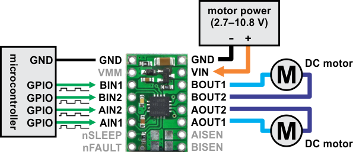
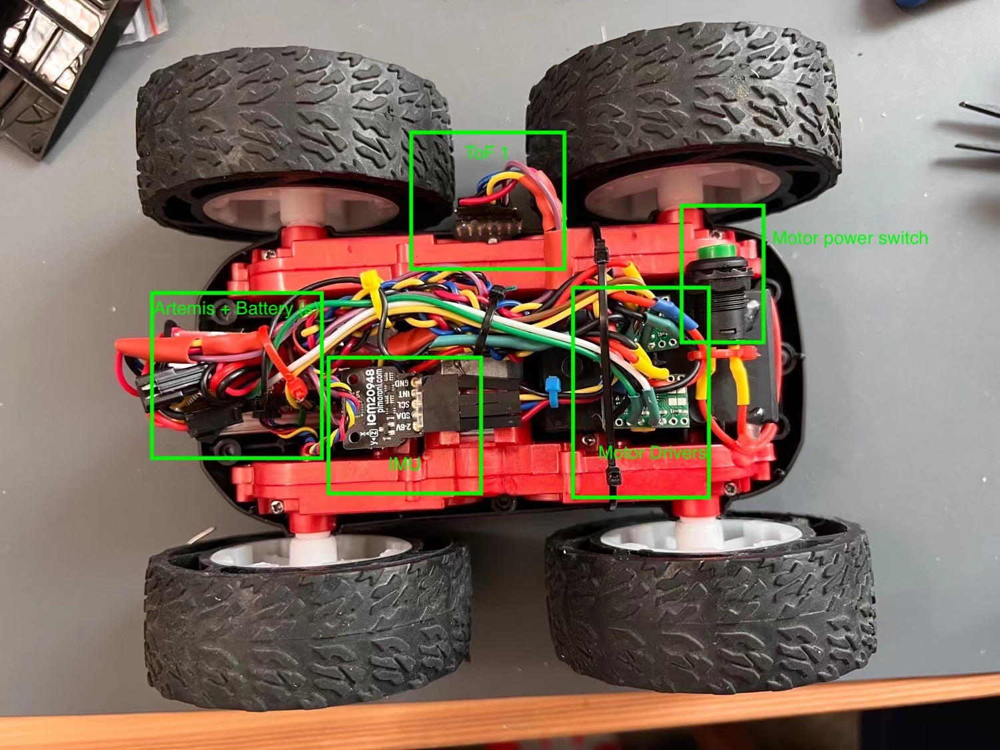
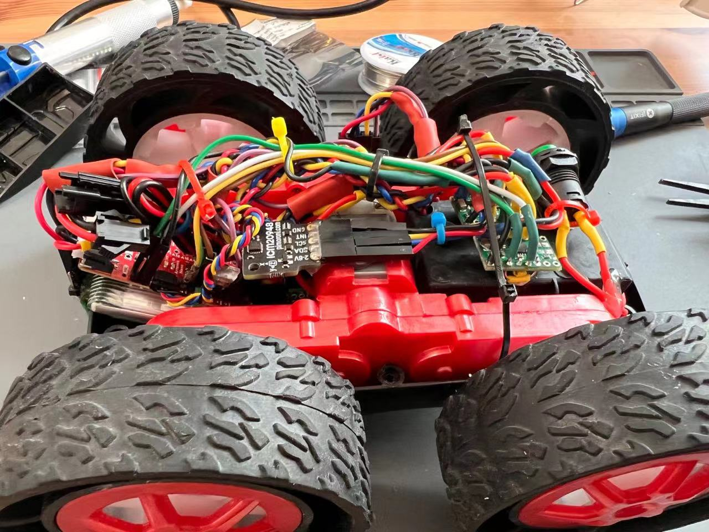
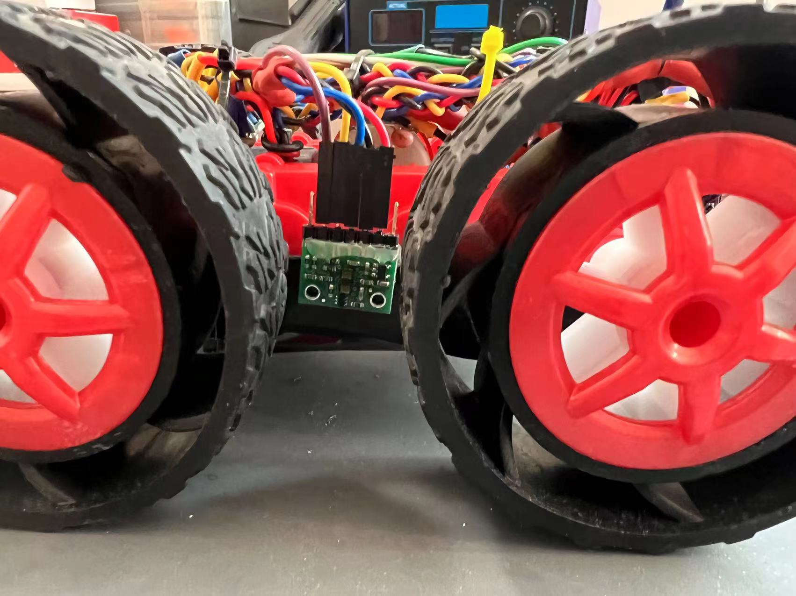
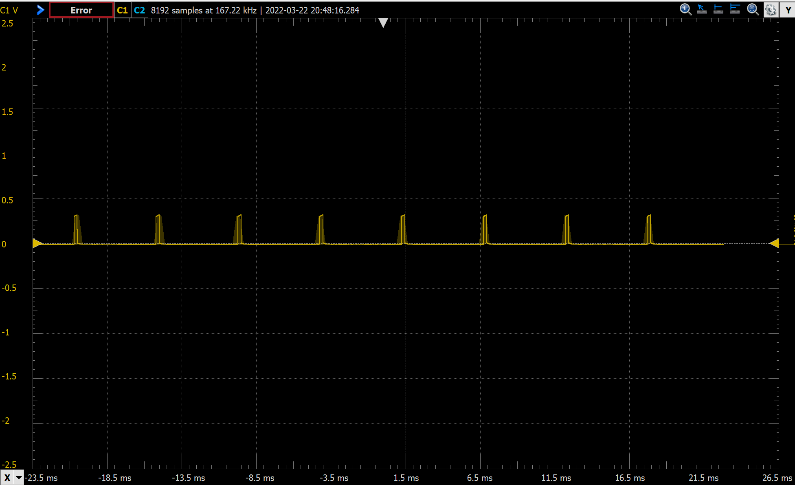
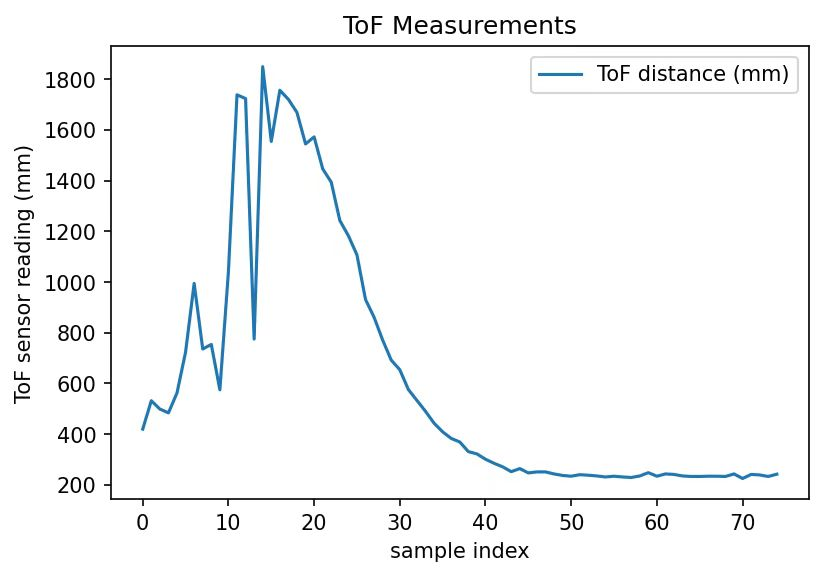
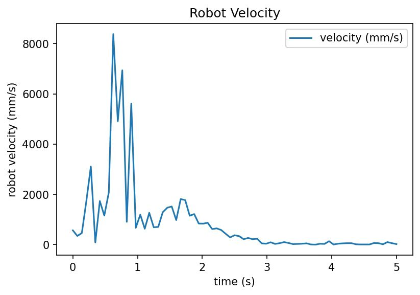

In this lab, we are finally able to take the robot apart and swap the factory PCB with our own Artemis + h-bridge controller. Before this lab, we rely on the factory PCB and the factory remote controller to manually control the robot. At the end of this lab, the robot will be able to execute a pre-programmed series of moves. The Artemis is now in control of the robot instead of just sitting outside taking measurements!
Hardware setup (wiring)
Background
At the end of lab 4, I have the Artemis board attached to two time-of-flight sensors and an IMU. In order to drive the motors, I need to add two motor drivers (h-bridge) to the system. The whole system will then be powered by two separate batteries: 1 x 650 mAh battery to power the Artemis board and all the peripherals, and 1 x 850 mAh battery to power the motors.
The motor driver board we are using for this course is Pololu's DRV8833 dual motor driver carrier. It's documentation is available here, and the motor driver chip's datasheet is available here. The image below shows how the motor driver should be connected to PWM pins on the Artemis board, the DC motors, and the motor power battery.
 DRV8833 dual motor driver carrier board connection. Source: DRV8833 documentation
The DRV8833 chip is only able to deliver a limited amount of current to each motor. Unfortunately, that is not enough current to drive our motors "fast" enough to call this robot a "fast" robot. Therefore, we will use EACH DRV8833 to drive ONE motor. The way we do it is by connecting BIN1/AIN1, BIN2/AIN2, BOUT1/AOUT1, and BOUT2/AOUT2. The other connections are the same, except that one board is only connected to one motor and two PWM pins. There are two motors on the robot, each controlling the left or right wheels. This way, we use two motor driver boards to control two motors, and each board is then able to deliver twice amount of current (the amount of current needed in a fast robot).
In addition to attaching the motor driver boards, we also need to
- Add a switch for motor battery (manual power cut off).
- Mount the ToF sensors and the IMU on the board.
- Cable management such that the robot can still function after flipping.
The actual wiring
After all the dirty soldering + hot-gluing + zip-tie, hardware setup is completed. The picture below shows the location of each component with labels.
 Overall wiring of my robotThe ToF sensors, the IMU, the motor drivers, and the motor power switch are all secured on the robot with hot glue. Wires are mostly secured with zip-tie with a few hot-glued spots. The Artemis board and its battery are fitted into the factory PCB's chassis, loosely secured by wires connecting to the front ToF sensor such that the battery and the board can be taken out for debugging and recharging (another picture below).
 Seeing from the side, we can see the Artemis board and its battery fitted inside the chassis.
The other ToF sensor (ToF 0) is mounted to the front of the robot by hot-glue (see the picture below). We also see how the Artemis board and the battery is secured by the wiring harness on top.
Just another view from the side: the side ToF sensor is sensing between the wheels.
 A ToF sensor mounted to the left sideside of the robot.Testing
Existing code from previous labs is used for testing the connection of ToF sensors and the IMU, making sure they are still function. A new program is used to test motor driver connections. I made a wrapper class to control the motors with helper functions like car_forward(speed) and car_backward(speed). The simple test program has the pseudocode below.
forward(left, 100);
forward(right, 100);
delay(1000);
backward(left, 100);
backward(right, 100);
delay(1000);
stop(left, 255);
stop(right, 255);
I observed the wheels turnning forward for 1 second, turning backward for 1 second, and a hard stop. This has convinced me that my motor driver connections are wired correctly.
Explore PWM lower limit for turning the motors
Technically, the range of PWM (that is the analogWrite() function in the Arduino library) could range from 0 to 255. However, motor speed is not linear with respect to PWM input. When the robot is on the ground and at rest, it needs certain amount of current passing through such that the motors have enough torque to start spinning. This is to say, there is a lower limit PWM value, below which the motors will struggle and will not move the car. There should also be an upper limit, above which the motor will be over-powered (over heat and potentially destruction) or the robot becomes not controllable (sensor sampling cannot keep up). The upper limit is left to be investigated in future labs when we get into feedback control.
Test for the lower limit is simple. The Artemis board is programmed to move the robot forward with a hardcoded PWM value, LIMIT_LOW. A value of LIMIT_LOW is assumed, and the robot is put on ground for test. If the robot moves, then we lower LIMIT_LOW. Otherwise, we raise LIMIT_LOW. In my case, I followed a binary search methodology, and finally found LIMIT_LOW = 40. In the video below, LIMIT_LOW = 37, and the motors make a struggling sound.
When LIMIT_LOW is raised to 40, the robot starts moving slowly as shown in the video below.
Note that LIMIT_LOW is environment dependent: it will be more difficult to move the robot forward on a carpet floor. In reality, we probably want to set LIMIT_LOW = 50 to prevent the robot from getting stuck.
Going a straight line
Even if the left and right motors are given the same PWM input, the wheels may not have the same torque or speed. This could be due to:
- Center of mass of the robot is not aligned to the center of the robot.
- Two motors may have slightly different characteristics.
- The wheels may not be perfectly aligned.
- Two motor drivers have slightly different characteristics.
To demonstrate that my robot (after calibration) can move in a fairly straight line, I put a 2 meter ruler on the ground. The robot starts centered on the ruler, and still partially overlap with the ruler at the end after it has travelled over 2 meters.
My target PWM range for this test is between PWM = 60 and PWM = 120, and my preliminary calibration strategy is to add a constant offset to the motor that is falling behind. A constant offset would make the calibration independent of the PWM value. This calibration strategy eventually worked out with adding PWM = 5 offset to the right motor.
Below are two videos showing my robot travelling in a straight line with PWM = 60 and PWM = 120. Beyond PWM = 120, it becomes difficult to control where the robot stops. (open loop control becomes insufficient to protect the robot from destruction)
Open loop control
Now it's time to add some pre-programmed moves to the robot to demonstrate the ultimate goal of this lab: open loop control. The robot simply executes the hardcoded moves. My open loop control moves are not especially impressive, but I think it's still pleasing to look at... Here is a video on it!
Robot open loop control with forward, turns, reverse (repeat 2x).Here is the programmed moves of the robot (corresponding to the moves on the video):
my_motors.car_straight(200);
delay(500);
my_motors.car_turn(100, -100); // center and turn right
delay(800);
my_motors.car_turn(150, 200); // forward and turn left
delay(800);
my_motors.car_straight(-100); // backup - partially fliped
delay(400);
my_motors.car_straight(100); // move forward
delay(200);
A1: analogWrite frequency
We want to take a look at the frequency of analogWrite and think about whether this frequency is adequately fast for our robot. To measure the frequency, a PWM pin on the Artemis board is programmed to yield PWM = 10 signal. The corresponding pin is hooked to an oscillascope. I use Digilent's Analog Discovery 2. It can only do 100MS/s and 30MHz bandwidth so it's a beginner scope, but it's good enough for this application. The picture below shows the experiment setup.
The picture below shows the waveform shown on the oscillascope.
 PWM=10 measurement on an oscillascope. Period is approximately 5.5 ms.The interval between two pulses is approximately 5.5 ms, which translates to 181 Hz. We can think of this as the fastest rate we can control the motors. Even if we modify the PWM duty cycle at a rate faster than 181 Hz, the MCU's timer is not able to pick up the change. However, 5.5 ms is still much shorter time than the sampling rate of the ToF sensors (which takes at least ~20 ms). I would like to argue that if we control the robot solely based on ToF sensor readings, the PWM signal frequency is good enough as it is now.
However, if we integrate readings from the IMU, or if we integrate Kalman filter into our control system, then we may be able to generate control outputs faster than 181 Hz. In this situation, the current PWM signal is not fast enough to respond to our control outputs, and it becomes a bottleneck blocking us from getting the robot respond faster.
If we can generate control outputs faster than 181 Hz, then we could benefit from manually tuning the MCU's timers to generate a faster PWM signal. This could allow us to have the robot respond faster, and potentially lead to the capability of doing difficult stunts that require very fast responses and controls of the robot. However, I would refrain from changing timer configurations until it is clear that this is necessary. Manually tuning the timer configurations would need me to dig into the Arduino library's source code and the MCU's specsheet, which could be a rabbit hole if I don't know for certain what I am doing...
A2: speed ramping up and down. Measure speed
This task asks me to write a program that ramps up and down in speed slowly, and reporting the values to my computer using Bluetooth. With this set up, I will be able to test out what range of speeds I can achieve.
I wrote a program to accelerate the robot straight forward with PWM = 100 for 1.25 seconds, and then brake with PWM = 150 for 2.5 seconds. The robot will be running towards a wall. During its movement, the robot tries to take a ToF measurement every 50 ms and records the value in a local array. The robot also records the time elapsed when it is taking measurements. At the end of the program, the robot transfers the ToF readings and the time elapsed to my computer via Bluetooth. There will be 25 ToF samples during which the robot is accelerating, and 50 ToF samples during which the robot is braking, adding up to 75 samples. Based on the time elapsed, we can also calculate the average time interval between two ToF measurements. Based on the rate the ToF readings change and the time interval between measurements, we can calculate the speed of the robot.
The video below shows the robot ramping up and slowing down in speed when running towards the wall. During this process, the robot is taking ToF measurements and storing them into a local array. After the robot stops, it sends the readings to my computer. I will not show the pseudocode because it is actually trivial to code...
Speed ramping up and slowing down. ToF is working to take measurements of distance to the wall.The plot below shows the raw ToF measurements reported by the robot. The x-axis shows the sample index, we see that there are 75 total samples reported from the robot. The first 25 samples is when the robot is accelerating, and the last 50 samples is when the robot is braking. On the plot, we can see that the first ~18 samples are obviously unstable/wrong because the distance between the robot and the wall in reality is constantly decreasing. We can also see that even though the ToF sensor is set to use the long distance randing mode, readings are only valid when the distance is less than 1.8 meters and the robot is moving fast. Fortunately, ideally the robot achieves its maximum speed in this set up at the 25 sample, and we can look at that data point to determine the maximum speed the robot has achieved under this set up.
 Distance to the wall measurement reported by ToF sensor. A total of 75 samples are taken. Robot starts braking after 25 samples are taken.The robot reports a total of 5000.02 ms time elapsed for these 75 measurements. Each measurement takes approximately 67 ms. To make the plot a little bit smoother, we look at the difference between ToF measurement n-1 and ToF measurement n+1, divide that by 2 and then divide by 67 ms to get the speed at sampling point n. This calculation yields the plot below for the speed of the robot.
 Speed vs. time calculated from the distance measurements. Speed calculated over a 3-sample window for better accuracy.We can ignore the portion of the plot when time is less than 1 s because of the wrong ToF measurements in the first ~18 samples. After that, we see that speed of the robot increases from 1 to ~1.8 second (robot is accelerating), and the speed decreases after ~1.8 second (robot is braking). The maximum speed the robot achieves is ~2 m/s.
When accelerating, the PWM value is 100, and the PWM value is 150 when the robot is braking. This is certainly not the maximum speed the robot can achieve because a) the accelerating PWM value could be higher, and b) the robot could use a longer distance to accelerate. However, this is the best I can do in my experiment setup because there is not enough room at home for my robot to accelerate and brake while preventing the robot from either flipping because of braking too hard or hitting the wall because the braking distance is not long enough.
In conclusion, this experiment has convinced me that the robot is totally controllable when it's speed is between 0 to 2 m/s: the ToF sensor reading could keep up and the motors can respond fast enough. The robot is definitely capable of moving even faster, but my experiment set up prevents me from pushing the maximum speed even further. In the future, we may use feedback control to experiment with faster speed while protecting the robot from being destroyed. :)